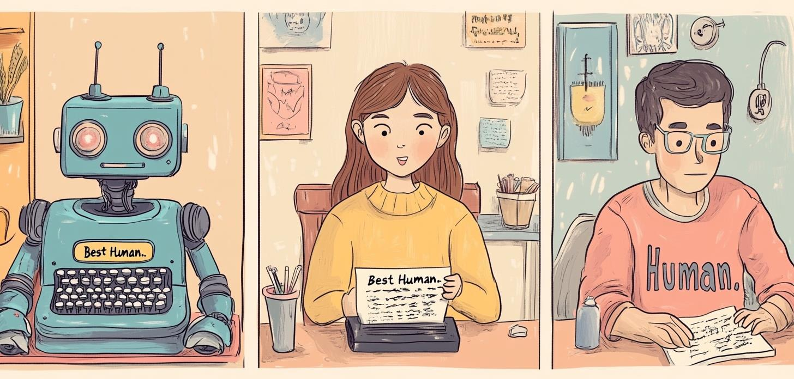
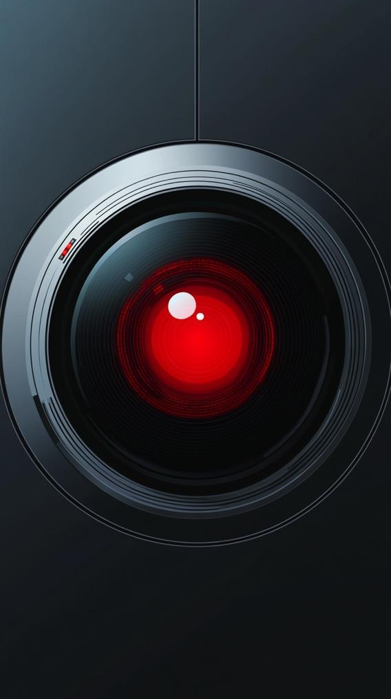
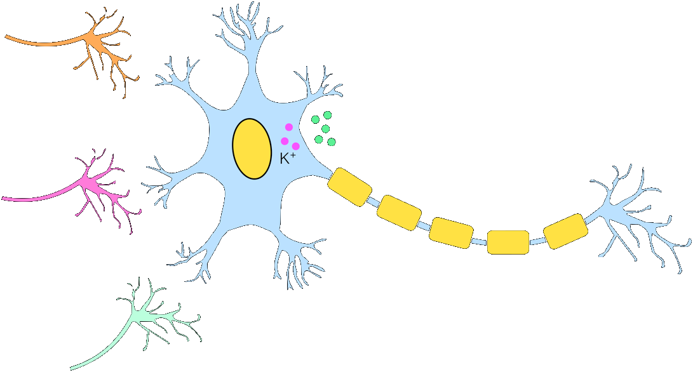
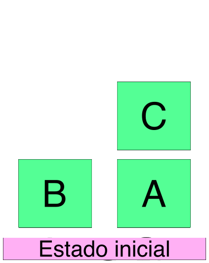
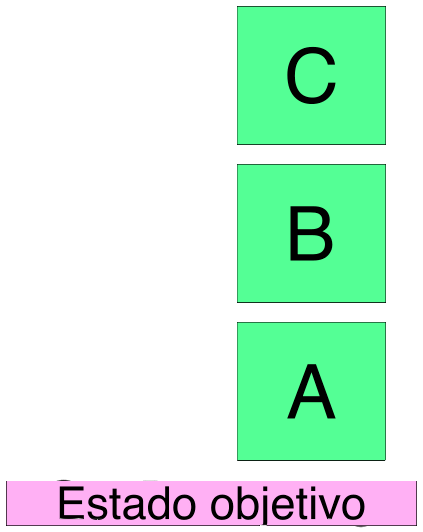
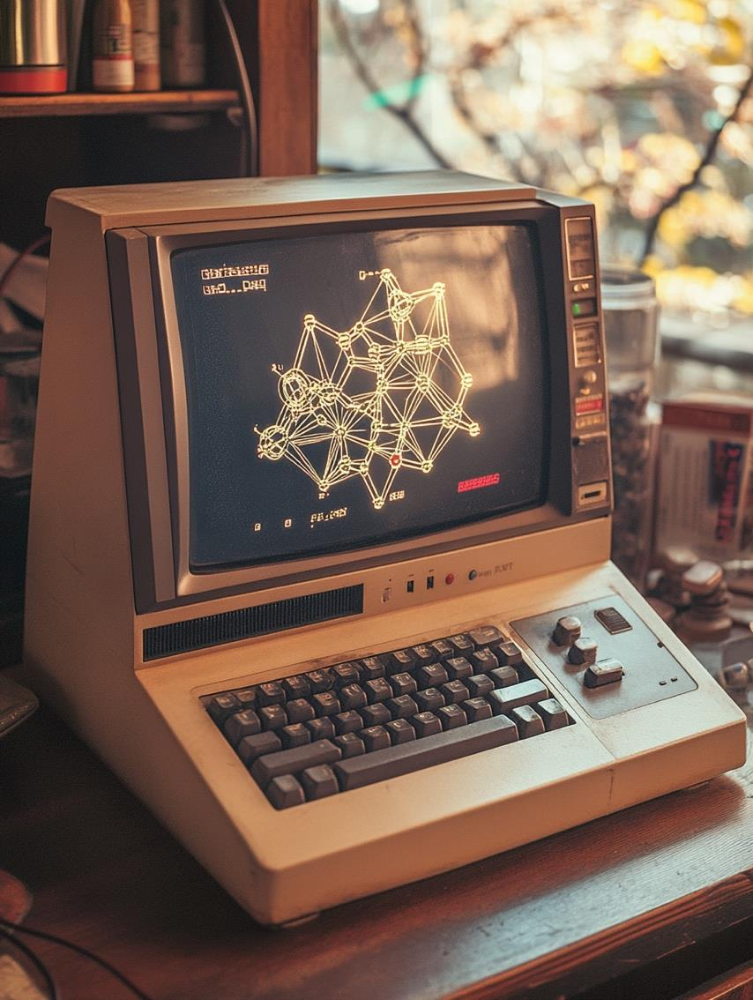

Introducción
Inteligencia Artificial
Dr. Ing. Facundo Adrián Lucianna — CEIA — FIUBA
Introducción
Información del Curso
- Aula virtual: campusposgrado.fi.uba.ar
- Repositorio: github.com/FIUBA-Posgrado-IA/intro_ia
- Consultas: Foro de consulta en el aula virtual
- Correo: Facundo Adrián Lucianna
Inteligencia Artificial
Inteligencia Artificial
¿Qué es la IA?
- La primera pregunta que nos hacemos es qué es la Inteligencia Artificial (IA)
- Como siempre en estos campos de vanguardia, no hay una sola definición.
- Según Stuart Russell y Peter Norvig:
- A veces se define en función de la fidelidad al desempeño humano o hacer "lo correcto" (racionalidad)
- También se considera sobre los procesos de pensamiento internos o del comportamiento externo
Inteligencia Artificial
Actuando humanamente – El Test de Turing

Inteligencia Artificial
Actuando humanamente: El Test de Turing
Programar un software para pasar rigurosamente el test implica un gran trabajo. Este software debe contar con:
- Procesamiento natural del lenguaje para comunicarse en un lenguaje humano.
- Representación de conocimiento para almacenar lo que conoce o escucha.
- Razonamiento automático para responder preguntas y obtener nuevas conclusiones.
- Aprendizaje automático para adaptarse a nuevas circunstancias y detectar patrones.
Inteligencia Artificial
Pensando racionalmente
El filósofo Aristóteles fue el primero en intentar codificar "pensar correctamente".
Sus silogismos proveyeron un patrón para estructuras argumentales que siempre llevan a conclusiones correctas.
"Sócrates es un hombre y todos los hombres son mortales entonces Sócrates es mortal"
Estas leyes de pensamiento derivaron en el campo de la lógica.
Para 1965, programadores pudieron resolver informáticamente cualquier problema de lógica resoluble usando la notación lógica.
Inteligencia Artificial
Pensando racionalmente
La lógica espera que el conocimiento del mundo sea cierto… pero el mundo es regido por la incertidumbre.
La teoría de probabilidad llena este vacío, permitiendo un razonamiento riguroso con información incierta.
Esto nos permite construir un modelo de pensamiento racional.
Pero esto no genera comportamientos inteligentes, con solo pensar no nos alcanza, necesitamos actuar.
"¿Pienso, luego existo" ya no vale más?
Inteligencia Artificial
Agentes racionales
Un agente es algo que actúa. Se espera que opere autónomamente, perciba el ambiente, persista en el tiempo, se adapte y cumpla objetivos.
Un agente racional es aquel que llega al mejor escenario, o si hay incertidumbre, al mejor escenario esperado.
IA se ha enfocado en el estudio y construcción de agentes que hacen lo correcto. Esto se llama el modelo estándar.
Este modelo ha sido predominante en IA, teoría del control, estadística y economía.
Inteligencia Artificial
Máquinas beneficiosas
El modelo estándar asume que se va a un objetivo específico a resolver… algo que, en la vida real, es mucho más difícil especificar el objetivo completamente y correctamente.
Inteligencia Artificial
Máquinas beneficiosas
El problema de alineación de valores: los valores u objetivos que damos a una máquina deben estar alineados con los del ser humano.
En un laboratorio se puede resetear el sistema. En la vida real, no es posible.
Cuando una máquina sabe que no conoce el objetivo completo, tiene un incentivo para actuar con cautela, pedir permiso y ceder al control humano.

Inteligencia Artificial
Campos conectados

Historia de la IA
Historia de la IA
El principio (1943–1956)
El primer trabajo reconocido de IA: Warren McCulloch y Walter Pitts (1943) — modelo de neurona artificial.
Donald Hebb (1949) creó una regla para modificar la intensidad de conexión entre neuronas (aprendizaje). Este modelo sigue siendo válido hoy.

Historia de la IA
El principio (1943–1956)
Alan Turing dio sus primeras lecciones en IA en 1947.
Introdujo el test de Turing, aprendizaje automático, algoritmos genéticos y aprendizaje por refuerzo.
Sugirió que sería más fácil crear IA desarrollando algoritmos de aprendizaje y luego enseñando a la máquina, en lugar de programar su inteligencia a mano.
Historia de la IA
Entusiasmo inicial (1952–1969)
En el establishment intelectual de 1950 regía: "una máquina nunca podrá hacer X".
Los investigadores de IA respondieron demostrando una X tras otra: juegos, rompecabezas, matemáticas y pruebas de IQ.
Arthur Samuel, usando aprendizaje por refuerzo, creó un programa que podía jugar a las damas (1956). El software aprendió por sí solo.
Historia de la IA
Entusiasmo inicial (1952–1969)
John McCarthy (1958) creó:
- Lisp: El lenguaje de programación de IA durante 30 años.
- Advice Taker: un programa hipotético que encarnaría el conocimiento general del mundo y podría utilizarlo para derivar planes de acción, aceptando nuevos axiomas sin reprogramarse.
Historia de la IA
Entusiasmo inicial (1952–1969)
Marvin Lee Minsky en MIT supervisó estudiantes que desarrollaron softwares en dominios limitados, llamados micro mundos.
El más famoso: el mundo de bloques.
El objetivo es construir pilas verticales de bloques. Sólo se puede mover un bloque a la vez: puede colocarse sobre la mesa o encima de otro bloque.


Historia de la IA
Primer invierno (1966–1973)
Herbert Simon (1957) predijo que en 10 años la IA lograría batir al campeón mundial de ajedrez y resolver teoremas complejos… cosas que demoraron 40 años.
- Los algoritmos se basaban en introspección informada sobre cómo los humanos realizan una tarea.
- No se habían desarrollado las teorías de complejidad algorítmica.
Historia de la IA
Primer invierno (1966–1973)
En el libro de Minsky y Papert, Perceptrones (1969), se probó que los perceptrones podían representar muy pocas funciones, principalmente la función lógica XOR.
Esto mató el desarrollo de Deep Learning y neurociencia computacional durante 15 años.
Historia de la IA
Sistemas expertos (1969–1986)
Ante la falla de los algoritmos previos, llegaron los sistemas expertos, la primera aplicación exitosa de IA.
El primer sistema experto fue DENDRAL (1969), que infería estructuras moleculares usando reglas de expertos químicos.
Luego vino otro invierno de IA, pero esta vez comercial.

Historia de la IA
El retorno de las redes neuronales (1986–presente)
En los 80, se re-descubrió el algoritmo de aprendizaje back-propagation, tarea fundamental para que las redes se entrenaran.
Geoff Hinton, uno de los principales impulsores de la vuelta de las redes neuronales, describió a los símbolos como el "éter de la IA". Fue la primera vez que se puso en discusión la idea de que la inteligencia se trataba de símbolos representativos.
Historia de la IA
Aprendizaje Automático (1987–presente)
IA tomó un enfoque más científico: se alejó de conceptos filosóficos y lógica booleana, para usar probabilidad y experimentos validables.
Esto llevó a que IA tome elementos de estadística, teoría de control, teoría de la información, optimización y más.
Se desarrollaron: cadenas de Markov, redes bayesianas, máquinas de vectores de soporte, etc. Llegaban a mejores resultados con mucho menos procesamiento.
Historia de la IA
Big Data (2001–presente)
Con la llegada de la World Wide Web y mejoras en las computadoras (ley de Moore), empezamos a tener datasets enormes: Big Data.
La disponibilidad de Big Data ayudó a aprendizaje automático y a IA a recuperar atractivo comercial.
En 2011, IBM Watson llegó a nivel de campeón humano en Jeopardy!
Historia de la IA
Deep Learning (2001–presente)
Con Big Data, las redes neuronales ahora profundas lograron explotar su potencial.
Se lograron enormes avances en casi cualquier área.
Solo fue posible con CPUs de 1010 ops/s, GPUs/TPUs de 1017 ops/s, y Petabytes de datos.
Beneficios y Riesgos
de la IA
Beneficios y Riesgos
Beneficios de la IA
- La entera civilización es el producto de la inteligencia humana. Las máquinas inteligentes nos pueden elevar el techo.
- Robots e IA pueden eliminar tareas nimias.
- Puede acelerar investigaciones científicas.
- Y más… ¿Cuáles se les ocurren?
Beneficios y Riesgos
Riesgos de la IA
- Armas letales autónomas.
- Vigilancia y persuasión (a lo 1984).
- Toma de decisiones sesgadas.
- Impacto en empleos.
- Implementación en aplicaciones críticas.
- Ciberseguridad.